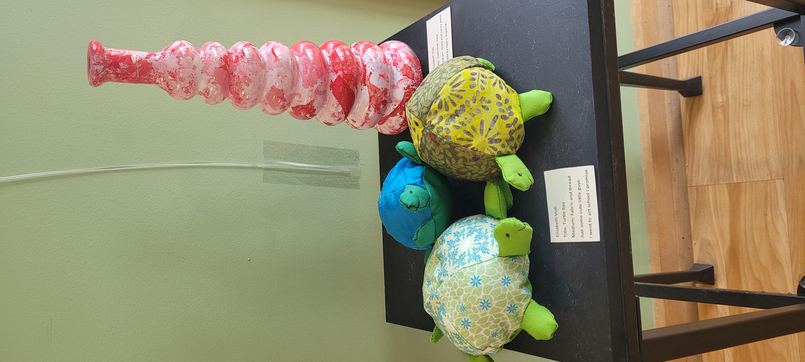

I am an art school dropout with an extensive sewing background. Anything with a pattern and written instructions, I can make!
Different sewing techniquesThe above link will take you to my page that outlines several different stitch variations, with instructions on when and how to use them.
Different Sewing MachinesHow to make a turtle friend! 
(Turtles I made are pictured above)
| Measurement | Hand Shortcut |
|---|---|
| 1/8 inch | pinky fingernail width |
| 1/4 inch | pinky fingernail length |
| 1/2 inch | thumb nail length |
| 1 inch | thumb length from nail tip to first knuckle |